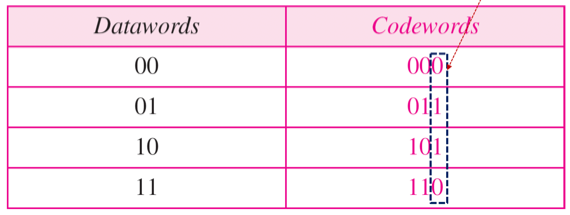
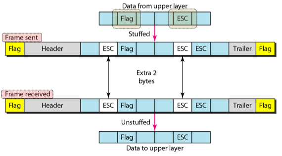
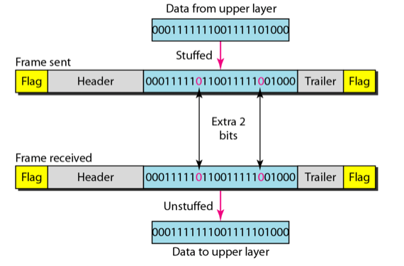
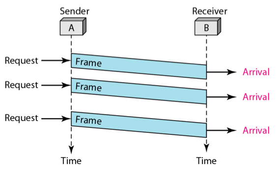
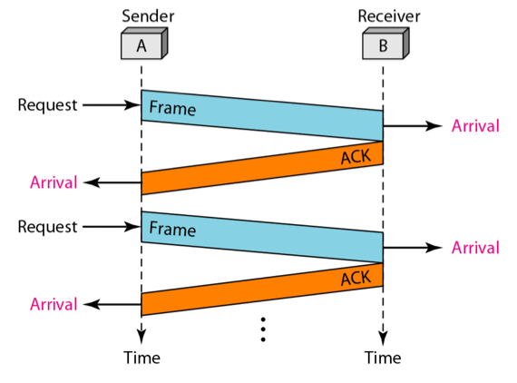
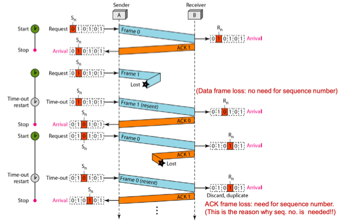

충남대학교 컴퓨터공학과 김상하 교수님의 "데이터 통신" 강의를 필기한 내용입니다.
다소 잘못된 내용과 구어적 표현 이 포함되어 있을 수 있습니다.
Datalink Layer의 목적
- 신뢰도가 높은 - 통신에 있어 단 하나의 에러도 발생기키지 않기 위한 목적
- Physical Layer의 경우에는 한번 전송할때 최대한 에러를 적게 내려는게 목표라면
- Datalink Layer의 경우에는 재전송하는 한이 있더라도 완벽한 데이터를 받게 하는것이 목표이다
- 이것을 위해서 프레임, 패킷이라는 단위로 전송을 한다
에러의 종류
- Single-bit Error : 하나의 비트가 잘못 수신되는 것
- Burst Error : 여러개의 비트가 뭉탱이로 잘못 수신되는 것
에러처리
- Parity(Redundant, Extra) bit나 data를 추가로 더 보내게 된다

- 위의 그림 예시를 보면 even parity의 경우에는 extra bit를 하나 추가로 두어서 1의 갯수가 항상 짝수가 되게 만들어주는데 1의 갯수가 홀수면 잘못 수신됐다고 판단할 수 있는 것이다
- 이때 Error Detection는 오류가 났는지 안났는지를 확인만 하는거고 Error Correction의 경우에는 어디서 에러가 났는지를 알아서 고칠 수 있게 하는 것이다
Detection
- detection의 경우에는 잘못 수신된 데이터를 원래의 데이터로 복구는 하지 못한다 - 이렇게 잘못 수신되면 다시 송신하라고 요청해서 제대로 수신될때까지 송신을 반복하게 하는게 detection을 활용한 통신이다
- 많은 에러를 detection하려면 당연히 많은 비트의 redundancy가 필요하다
Correction
- correction의 경우에는 redundancy를 추가해서 unique한 패턴으로 만들어서 보내게 된다. 이 경우에는 한 비트가 에러가 나도 금방 원래의 데이터를 추론할 수 있기 때문에 원 데이터로 correction할 수 있다
- 예를 들어 01111로 수신됐는데 패턴 중에 01011이 존재한다면 세번째 비트가 오류가 났다는것을 금방 추론하고 01011로 수정해서 상위계층으로 올리게 된다
Frame, Packet의 필요성
- 데이터가 크면 이놈을 위해 필요한 redundancy도 엄청 커지고 이것을 오류가 날때마다 계속 보낸다면 비효율적이다
- 따라서 이런 큰 데이터를 송신할때는 작게 잘라 보내게 되는데 이것을 Framing이라고 하는 것 이다
- 이 나눠진 한 단위를 Packet이라고 하며 이것이 데이터 링크를 지날 때에는 Frame이라는 이름으로 부른다
- Fixed-size framing의 경우 크기가 정해져있기 때문에 데이터의 시작과 끝을 구별해내기 쉽지만 데이터가 작을 경우 비트 낭비가 있다는 단점이 있다
- 운체에서 internal fragment가 발생하는 원리랑 같은 원리이다
- Variable-size framing의 경우 데이터의 크기에 따라, 그리고 전송매체에 따라 사이즈를 가변적으로 활용할 수 있다는 장점이 있지만 데이터의 시작과 끝을 나타내는 Delimiter가 추가로 필요하다는 단점이 있다
- 전송매체에 따라서도 자르는 프레임의 크기가 다른 이유는 에러가 적은 전송매체로는 많은양의 데이터를 보내도 괜찮고 에러가 많은 전송매체로는 적은양의 데이터밖에 보낼 수 없기 때문에 이렇게 하나의 데이터를 여러 사이즈로 프레이밍해서 각기 다른 매개체로 병렬적으로 보내게 되는 것 이다
Character-Oriented Protocols
- 데이터들이 8비트 문자의 묶음 형태로 전송되는 것을 의미
- Flag : 데이터의 시작과 끝을 나타냄
- Header : 송수신 주소에 대한 정보를 담고 있음
- Trailer : redundancy가 담겨있음
Byte Stuffing, Unstuffing

- 만약에 전송하는 문자열에 flag가 들어있으면 얘는 진짜로 flag인게 아니라 “flag”라는 데이터일 뿐이므로 프레이밍 과정에서 앞에 ESC(escape)문자를 붙인다
- 이렇게 데이터를 프레이밍하는 과정에서 ESC를 붙여 뒤에 나오는 놈이 어떤 의미를 갖는 표식이 아닌 그냥 데이터의 일부일 뿐이라는 것을 명시하는 것을 Byte Stuffing이라고 한다
- 마치 Like 문자열 escape character 와 같다
- 따라서 ESC 뒤에 있는 놈은 프레임의 구조를 분석할때 제외된다
- 프레임에서 데이터를 다시 끄집어 낼 때에는 이 ESC는 다시 지우게 되는데 이 과정을 Byte Unstuffing이라고 한다
- 근데 이때 데이터에 “ESC”라는 문자열이 들어있으면 얘를 byte stuffing에 의해 추가된 놈이라고 생각해 지울 염려가 있다
- 그래서 데이터로써의 “ESC”가 있어도 그 앞에 ESC를 하나 붙여 ESC를 지워도 데이터로써의 “ESC”는 남아있을 수 있도록 한다
- 프레이밍을 할때는 ESC를 “ESC”나 “FLAG”앞에 기계적으로 붙이고 다시 데이터를 끄집어낼때는 데이터 내의 ESC를 기계적으로 지우기 때문
Bit-Oriented Protocol
- 사진, 동영상, 음악같은 경우에는 문자로 표현이 안되기 때문에 그냥 커다란 bit 덩어리로 보내게 된다
- 따라서 특정한 bit stream을 flag로 지정해 시작과 끝을 나타내게 된다
Bit Stuffing, Unstuffing

- 얘도 동일한 문제가 발생할 수 있다. 만약에 1이 6개가 연속될때를 flag라고 지정했을 때, data bit에 1이 연속 6개가 들어있으면 얘를 flag로 인식할 수가 있다
- 따라서 데이터에 1이 5개가 연속되어 있으면 그 뒤에 0을 무조건 붙이는 방식으로 Bit Stuffing 을 하고
- Unstuffing과정에서는 1이 5개 연속되어있는 다음의 0은 제거하는 방식으로 진행 하면 이런 혼동을 막을 수 있다
가상의 Noiseless Channel에서의 Protocol
Simplest Protocol

- Simplest protocol : 아무짓도 안하는 프로토콜
- 그냥 redundancy같은거 필요없이 프레임을 주고 받으면 된다
Stop-and-Wait Protocol

- Flow error : 프레임이 도착한다고 해서 바로바로 상위계층으로 올라가는게 아니다 - 프레임이 도착하면 버퍼에 저장되어 있다가 이 버퍼를 비우고 다시채우고 하는 과정을 반복하게 되는데 버퍼를 비우는 프로세스가 블락을 먹거나 하는 등의 이슈로 멈추게 되면 새로 들어온 프레임은 기존에 버퍼에 들어있던 프레임을 덮어쓰게 된다. 이렇게 수신자의 처리속도와 송신자의 처리속도의 차이에 의해 에러가 나는것을 flow error라고 한다
- 따라서 noiseless channel이어도 에러가 날 수 있다는 것
- Stop-and-wait protocol : 이러한 flow error를 해결하기 위한 프로토콜. 수신자가 수신 완료 후 ACK(QSL같은놈 - 수신 잘 됐다는거)날리면 그때서야 다음 프레임을 전송하는 구조
실제 Noisy Channel에서의 Protocol
Stop-and-Wait ARQ(Automatic Repeat reQuest)

- Stop-and-Wait ARQ프로토콜은 기존의 Stop-and-Wait Protocol에서 노이즈에 의해 ACK가 오지 않았을때를 해결하는 프로토콜이다
프레임 송신중 에러가 날 때
- 이게 수신자가 아직 수신을 못해서 ACK가 안온건지 아니면 에러가 나서 ACK가 안온건지 알 수 없기 때문에 송신자는 일정시간 기다린 후에 이 프레임을 다시 보내게 된다( - automatic repeat의 말 뜻이 이거다)
ACK송신중 에러가 날 때 + 종합적 통신과정
- 하지만 수신자는 잘 받았는데 ACK가 에러가 나서 송신자측에서 프레임을 못받았다고 판단해 다시한번 보내게 되면 중복 데이터가 수신되는 셈이다
- 이를 방지하기 위해 프레임에는 Sequence Number라는게 존재한다 - 즉, 이 프레임이 몇번째 프레임인지를 나타내는 숫자
- 그리고 ACK Number는 수신자 측이 잘 받았고 이제 나는 ~번째 프레임이 필요하다 라는 뜻을 가지게 된다
- 수신자 측에서는 seqNum이 0인 프레임을 정상적으로 수신해서 ACK 1을 보냈는데 송신자측에서 못알아듣고 seqNum이 0인 프레임을 한번 더 보내면 수신자측은 seqNum을 통해 중복수신이라는 것을 파악하고 seqNum 0인 프레임은 폐기하고 ACK1 를 한번 더 보내게 된다
- 그리고 이번엔 프레임 유실이 생겼다고 해보자. ACK1을 송신자가 받아서 S1을 보냈는데 그 다음 ACK가 안오면 잠시 뒤에 S1을 다시 보내게 된다. 그리고 이때 수신자가 받으면 이때에는 자기가 원하던 데이터를 받은 것 이므로 저장하게 된다 - 즉, seqNum은 프레임 유실을 방지하기 위한 숫자는 아니라는 소리